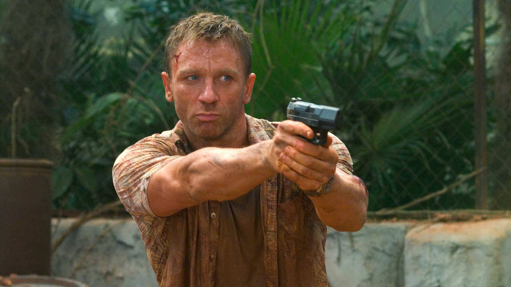
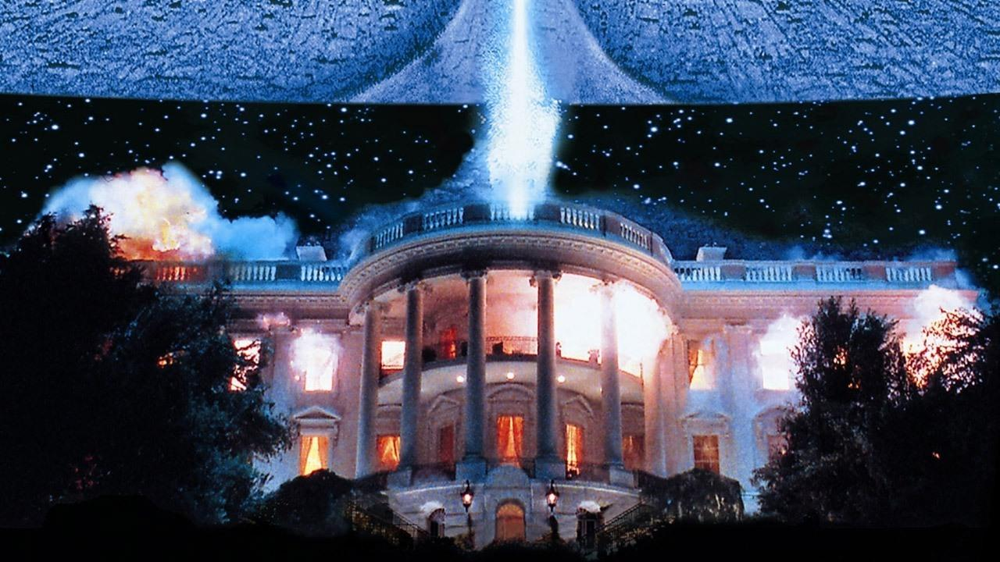
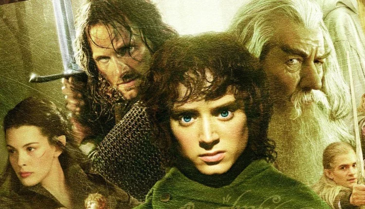
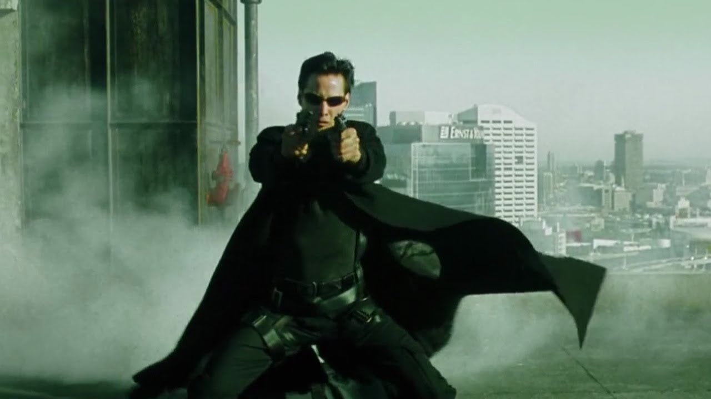
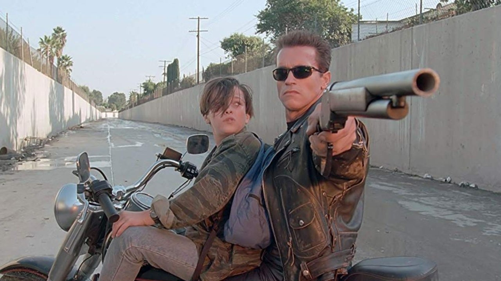

The Best Action Movies of All Time
1. Captain America: The Winter Soldier (2014)

The Russo Brothers' first directorial effort within the MCU was so superb that they not only went on to get their hands on Captain America: Civil War, but also the culminating Avengers films of the Infinity Saga. Winter Solider is a hard-hitting espionage thriller of the highest order, one that threw not only Steve Rogers' life into disarray but the entire MCU as well when it was revealed that SHIELD had been inadvertently serving HYDRA for decades following the Red Skull's defeat. The action scenes, vehicle demolition, and fight choreography were in top form here as Steve threw down against his past, both professionally and personally. This one is hailed by many as the best MCU film, Avengers-outings included.
2. RRR (2022)
.jpg)
Taking select audiences by storm in 2022 was RRR, an outlandish Indian action epic featuring fictional versions of two Indian revolutionaries - Alluri Sitarama Raju (Ram Charan) and Komaram Bheem (N. T. Rama Rao Jr.) - their friendship, and their fight against the British and a baddie played by the late Ray Stevenson. Over three hours of glorious cartoonish violence and sweeping musical numbers (with Oscar-winning songs) creates an intoxicating, over-the-top crescendo parade - one that will most likely leap up our ranks as years press on.
3. John Wick: Chapter 4 (2023)

t's hard to believe that the John Wick movie franchise squeezed in so much action into four movies in just under a decade. The journey of one unstoppable hitman's quest to avenge his dead puppy (which was helping him grieve for his late wife) opened up into a worldwide battle for redemption full of kung fu, gun fu, krav maga, judo, and just about any other form of cinematic badassery. Not since the Hong Kong films of John Woo had gunplay been treated so much like a dance, with bullets being extensions of the characters' will. Chapter 4, which broke Wick saga records, brought everything to an insane, crunching conclusion perhaps? as the hurdles John faced became a literal 300-step staircase into oblivion.
4. Fast Five (2011)

Even though the Fast and Furious movies have gotten increasingly more death-defying (and reality-defying) since they began over two decades ago, Fast Five is still considered by many to be the best of the bunch, and the pinnacle that bridges the original story with the crazy world-saving A-Team style adventures that take place in the back half of the franchise. Before the Shaws were even introduced, The Rock debuted as Luke Hobbs, a DSS agent charged with bringing in Dom Toretto and his thieving "family." Everything culminated in Brazil with a wild, destructive money heist that remains uber-important to this day considering the whole revenge plot of Fast X.
5. Casino Royale (2006)
This one is perhaps the most cerebral of all 007's adventures. Daniel Craig played James Bond as thuggish on the outside, but emotionally damaged and vulnerable underneath, in the process adding a layer of depth previously unseen in Bond's outings. (An absence of ice palaces and invisible cars also helped, of course.) Craig's 007 is a finely tuned machine who is absolutely believable as someone who could clear a room, and as a cold, hardened man who has buried his heart as far away from harm as possible. The action sequences several of which, like the opening parkour set-piece, must be seen to be believed are breathtaking and returned Bond to his down and dirty roots.
6. Ip Man (2008)

Bruce Lee's martial arts teacher, the legendary Ip Man, is the focus of this four (soon to be five) film franchise that follows the Wing Chun grandmaster and his life during the Sino-Japanese War. Starring Hong Kong icon Donnie Yen in the title role, and with martial arts choreography by the unparalleled Sammo Hung, the first Ip Man is graceful, thrilling martial arts expertise mixed with a refreshing character-driven drama. Never meant to be a true biography, Ip Man hits the broad strokes with a palpable, pulpy verve.
7. Independence Day (1996)
This rousing slice of '90s bravado showed us a world outmatched by hostile alien forces bent on the utter annihilation of humanity. Arriving one day in city-size flying saucers, capable of causing mass destruction with a single beam blast, these extra-terrestrials had it in the bag - were it not for a plucky ensemble of characters that include a scientist, a pilot, a drunk, and the President (complete with an inspirational speech). Independence Day is expert popcorn-fare. It's a spectacle to be seen, not believed. It kickstarted director Roland Emmerich's penchant for obliterating world monuments, solidified Will Smith's place as an action hero, and played us a new version of War of the Worlds in that monstrous Martians can always be felled by a virus (in this case a computer one).
8.The Lord of the Rings: The Two Towers (2002)
Peter Jackson's Lord of the Rings trilogy contained plenty of armies clashing on the battlefield, but it was the war for Helm's Deep, which brought The Two Towers to its brutal close, that stands out in the arena of action cinema. The Two Towers split the fellowship into three storylines, making for a much more fragmented story compared to the first movie. But Aragorn and King Theoden's last-ditch stand at Helm's Deep, mixed with the Ents' terrific takedown of Saruman's forces, gave us the saga's most thrilling and satisfying spectacle. The dark forces would have prevailed here if not for the fierce determination of humans, elves, hobbits, and trees.
9. The Matrix (1999)
"What's he doing?"
"He's beginning to believe!"
Neo decides to square up to humanity's oppressors, opting to duel the dastardly Agent Smith rather than run. The two mega-powered avatars locking horns in "bullet time" created an instant pop culture touching point, as kung fu fetishists the Wachowskis introduced a whole new generation to the old school with the help of legendary wire-work choreographer Yuen Woo-Ping and a revolutionary camera system. The Matrix is brimming with all sorts of philosophical questions. What is reality? Is the world around us real or an illusion? Whose kung fu is strongest? The film strove to be more intelligent and thoughtful than the average action movie, yet it was never afraid to put aside the musing for some well-choreographed butt-kicking. The Matrix's slow-motion combat ballet inspired legions of imitators, but none have lived up to the original, not even the three Matrix sequels.
10. Terminator 2: Judgment Day (1991)
James Cameron's 1991 sequel to the 1984 movie that made Arnold Schwarzenegger a worldwide star, Terminator 2: Judgment Day packs in non-stop action, state-of-the-art special effects (that still manage to look impressive today), and a great villain (the seemingly unstoppable T-1000, played by Robert Patrick). From Arnold's entrance to the breakout of Sarah Connor (Linda Hamilton) from the hospital to the shoot-out at the lab and the Terminators' battle at the steel foundry, the action doesn't let up and Schwarzenegger never looked cooler. T2 is host to some truly epic action and chase sequences, and even after three decades, the film puts most action movies to shame. But where T2 truly earns its enduring status is in its heart and thoughtful message. T2 was all about the notion that the future is not set in stone, and that people can rewrite their destinies if they so choose. Even a cold machine can learn what it means to love and feel emotion!